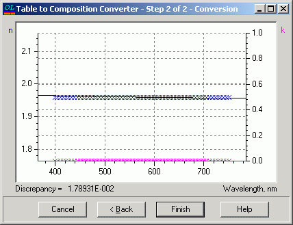

Composition from Table
At the first step of the conversion dialog:
Select the number of materials that will form the composite material.
Enter the names of these selected materials.
Set the starting values for the material fractions. These values will serve as the initial input for the fitting process, which will search for the best approximation of the tabular data.

At the second step of the conversion dialog:
The best approximation of the tabular data will be displayed.
If the conversion result appears satisfactory, you can press the Finish button to transfer the obtained composition approximation to the Materials/Substrate editor.
If the result is unsatisfactory, you have the option to press the Back button and try a different set of materials or adjust the starting set of material fractions for a better approximation.